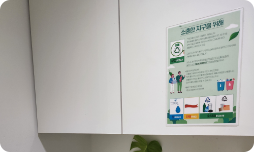

메인 이미지 입니다.
より良い世界をつくる
社会貢献
社会的責任を果たし、隣人と共存する企業になります。
共生社会を作っていきます。
企業の社会的責任を果たし、社会問題の解決に貢献することで、組織の構成員、会社、社会が共に生き、繁栄することに貢献します。
社会貢献活動
トランスコスモスコリアは、共に幸せになるために人材育成、環境保全、健康増進のための社会貢献活動を積極的に展開しています。豊かで便利な生活のためのTCKの努力が企業の枠を超え、社会でも継続的に展開されるよう努力しています。
-
 ESG情報共有
ESG情報共有毎月、組織文化ニュースレターを発行し、ESG情報の共有及びSNS認証イベントを実施しています。
-
 図書寄付キャンペーン
図書寄付キャンペーントランスコスモスコリアの社会貢献プロジェクト「ピウムナヌムチェウム(空ける分ける満たす)」は、文化的弱者のための図書寄付キャンペーンです。読まれずに眠っている本を寄付することで、地域社会とトランスコスモスコリアが共に成長する社会を夢見ています。
With together
トランスコスモスコリアの従業員と共に行う社会貢献プログラム
「ウィズ・トゥギャザー」キャンペーンを通じて、健康で美しい
社会を作るために努力します。
-
01
第1回ボランティア活動「ご飯を食べよう」
冬休み期間中、保護が必要な児童が健康的に長期休暇を送れるように昼食を支援
支援金 : 20,000,000ウォン
対象 : 全国の小学校123校に通う児童2,386人に昼食を提供 -
02
第２回ボランティア活動「大丈夫だよ、応援するよと同じくらい！愛しています」
貧困家庭の女児に女性用衛生用品及び新型コロナ予防物資を支援
支援金 : 38,585,000ウォン
対象 : 全国の貧困家庭の女児300人に物品を寄贈 -
03
第３回ボランティア活動「#Study Must go on」
非対面授業のため困っている児童にIT学習機器を支援
支援金 : 35,440,000ウォン
対象 : 全国の児童128人にタブレットPCを提供
全羅北道群山の46地域の児童センターにウェブカメラを寄贈 -
04
第４回ボランティア活動「(part1) 心の健康！ Build-Up！, (part2)こどもの健康で楽しいお弁当タイム」
児童の情緒的安定及び健康的な成長のための支援
支援金 : 30,000,000ウォン
対象 : (part1) 京畿道水原心理治癒センターの環境改善
(part2)ソウル地域の児童75人に健康なおかずを支援 -
05
第５回ボランティア活動「Study Must Go on」シーズン2
児童の教育環境改善が必要な家庭に壁紙及び床材施工、学習用家具を支援
支援金 : 30,621,900ウォン
対象 : 住居改善が必要な貧困層の児童 -
06
第６回ボランティア活動「バリアフリー児童の権利教育コンテンツ支援」
視聴覚障害児童のためのバリアフリー児童の権利教育コンテンツ支援
支援金 : 28,400,000ウォン
対象 : 全国の視聴覚障害者学校12校(児童349人)
친환경 활동
TCK는 사무실에서도 간단하게 실천할 수 있는 환경 보호 캠페인인
‘지구를 위해’ 캠페인을 전개하고 있습니다.


-
01
大切な地球のために
世界的に環境保護の重要性が高まるにつれ、環境保護に賛同する消費者が増え、TCKも環境保護の一環として「ペットボトルの分別廃棄 - 水ですすぎ、ラベルは剥がして」分別回収推奨ポスターを制作し実践しています。
-
02
ペーパータオルは1枚だけ
ペーパータオル1枚が分解されるまで約1ヶ月もの時間がかかります。
ペーパータオルを1人が1年使うことで毎年1本の木が消えています。
そこでTCKは無分別に使用されるペーパータオルの使用を減らし、環境保護に貢献するためのキャンペーンを実践しています。